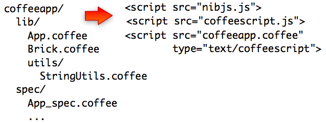

Or even running CoffeeScript code in the browser!
In addition to the previous example, the coffeescript source of this example is compiled by the browser instead of being prepared by nibjs at packaging time. This coffeescript/nibjs feature is useful when coffee compiler is not easily available on the server.

Please be aware that making so is not really recommended for production use...